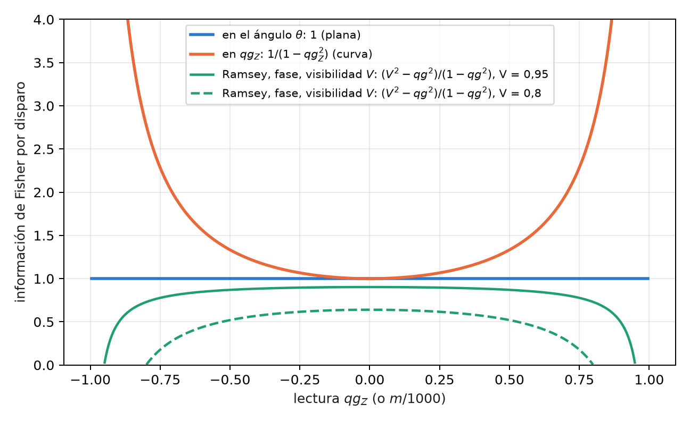
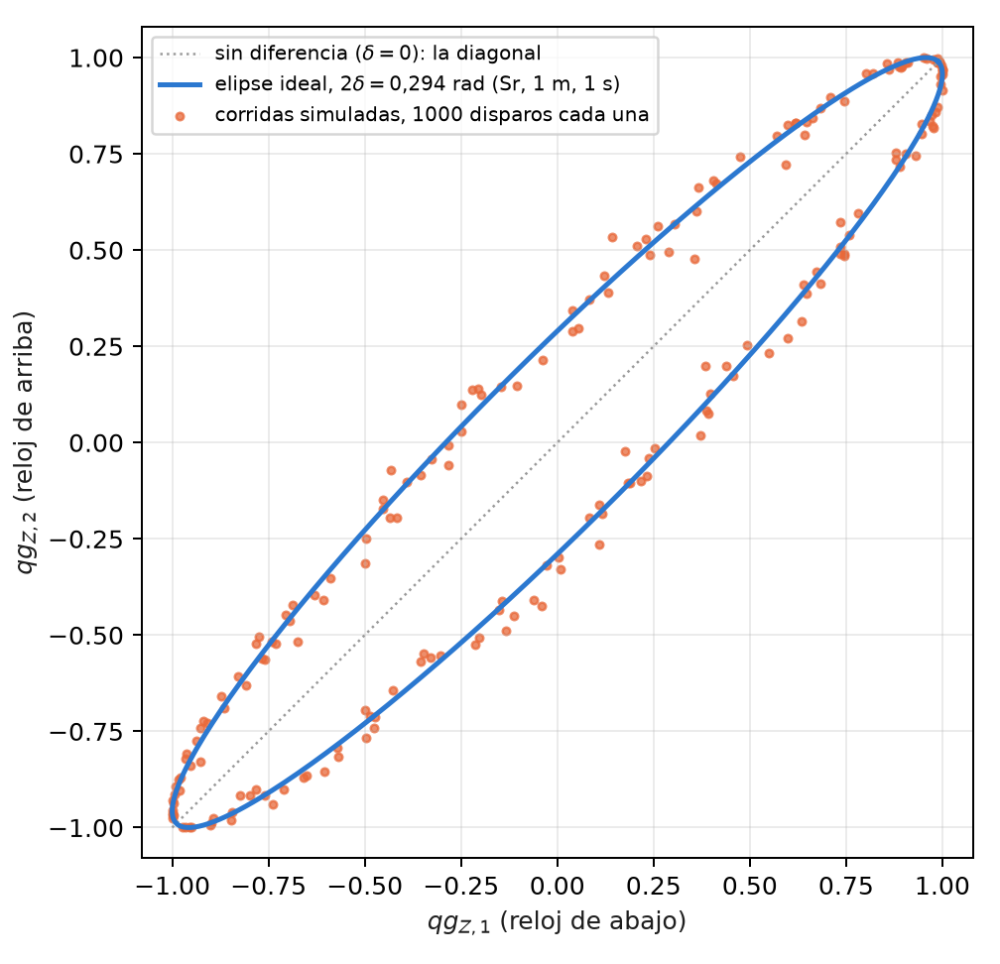
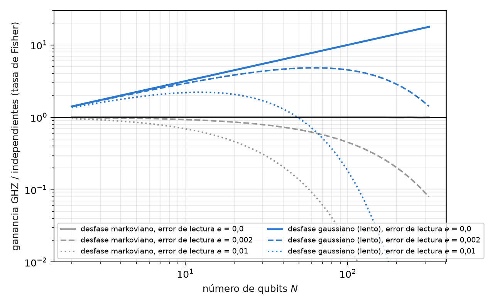

8 Información de Fisher, relojes, gravedad y metrología
La metrología es la disciplina de medir un parámetro con la menor incertidumbre posible, y su herramienta central es la información de Fisher: cuánto enseña cada disparo sobre el parámetro. Este capítulo la escribe sobre la base del capítulo 1. La ecuación de probabilidad \(p_0=\cos^2(\theta/2)\) fija cuánta información lleva cada lectura, y de ahí salen la resolución en mili-qang, el punto de operación de un interferómetro, la comparación de dos relojes atómicos a un metro de altura, la ventaja (y los límites) del entrelazamiento y la termometría de un qubit.
8.1 Desde la base: la información de un disparo
Un disparo en la base \(Z\) es una moneda con probabilidad \(p_0\). Su información de Fisher sobre el ángulo es
\[ F_\theta=\frac{(dp_0/d\theta)^2}{p_0(1-p_0)}=\frac{\sin^2\theta/4}{\sin^2\theta/4}=1 , \]
constante en toda la esfera; sobre la lectura \(qg_Z=\cos\theta\), en cambio, es \(F_{qg}=1/(1-qg_Z^2)\), que crece hacia los polos. El ángulo qang es la coordenada plana de la información y \(qg_Z\) la coordenada curva (Figura 8.1). Las dos descripciones son la misma física: la varianza \(1/N\) del ángulo del capítulo 1 es la cota de Cramér–Rao en la coordenada plana (§167).

Expresada en mili-qang, la cota da la resolución de una lectura:
\[ \sigma_m=\frac{1000\,|\sin\theta|}{\sqrt N}\ \text{m-qg},\qquad N=\left(\frac{1000\sin\theta}{\delta}\right)^2 \ \text{disparos para resolver } \delta\ \text{m-qg}. \]
En el ecuador, resolver 10 m-qg exige \(10^4\) disparos y resolver 1 m-qg, \(10^6\); a 60° del polo, 5 m-qg cuestan 30 000. Cerca de un polo la lectura es más precisa en m-qg, pero un m-qg corresponde allí a un ángulo mayor: un estado a \(\delta\) m-qg del polo está a \(\arccos(1-\delta/1000)\approx\sqrt{2\delta/1000}\) radianes, 2,56° para 1 m-qg.
8.2 Geometría de la información y el gradiente natural
La versión de muchos parámetros de la información de Fisher es la métrica de Fubini–Study, y gobierna el gradiente natural: el descenso que mide los pasos en distancia entre estados y no en distancia entre parámetros. En un ansatz real de rotaciones \(R_Y\) y compuertas CZ, todo estado del circuito es real, \(\langle Y_k\rangle=0\) antes de cada rotación y cada entrada diagonal de la métrica vale exactamente \(\tfrac14\): los ángulos son planos uno por uno, y toda la curvatura está en los términos cruzados, que dentro de una capa son correladores \(\langle Y_iY_j\rangle/4\), medibles con un circuito por capa (§159).
Dos consecuencias prácticas, verificadas en una cadena de Ising de 4 qubits con 20 semillas: el descenso en coordenadas qg no converge nunca (0 de 20), porque la coordenada curva distorsiona los pasos; y el gradiente natural con la métrica de bloques qg\(_{YY}\) es 1,3 veces más rápido que el descenso en el ángulo, y 4,6 veces con la métrica completa. La ganancia viene de la métrica, no de cambiar de coordenada: el gradiente natural en qg es el descenso euclidiano en \(\theta\). La regla es optimizar en el ángulo y leer en qg.
8.3 Dos relojes y la gravedad
Un reloj atómico mide una fase, y dos relojes a distinta altura avanzan a ritmos distintos: el corrimiento al rojo gravitatorio. Leídos con el mismo láser, dan \(qg_{Z,1}=\cos(\varphi+\delta)\) y \(qg_{Z,2}=\cos(\varphi-\delta)\), donde \(\varphi\) es una fase común aleatoria (el ruido del láser) y \(2\delta\) la diferencia buscada. Aunque \(\varphi\) sea desconocida, los pares de lecturas caen sobre la elipse
\[ x^2+y^2-2xy\,c=1-c^2,\qquad c=\cos2\delta , \]
de modo que la diferencia se lee de la forma de la nube, sin controlar la fase común (Figura 8.2). Para dos relojes de estroncio separados 1 m, \(2\delta=2\pi\nu\,gh\,t/c^2=0{,}294\) rad en un segundo.

El ajuste de la elipse necesita los cuadrados de las lecturas, y ahí interviene el estimador insesgado de \(qg^2\) del capítulo 4: sin la corrección, el sesgo del ruido de disparo achata la elipse. Las cuatro predicciones registradas se cumplieron (§126):
| prueba | resultado |
|---|---|
| sesgo relativo, 1000 disparos, 200 corridas, cuatro valores de \(\delta\) | +0,09%, +0,12%, +0,05%, −0,07% |
| desvío del ajuste de elipse frente al estimador de momentos (\(\delta=0{,}15\)) | 0,0022 frente a 0,0075 |
| sesgo con 100 disparos, sin y con la corrección | +11,8% y +0,9% |
| estroncio, 1 m, 1 s | \(\delta=0{,}1471\); estimado \(0{,}1472\pm0{,}0022\) (68σ) |
En este modelo idealizado, la dispersión equivale a unos 1,5 cm de altura cada 200 corridas. Los límites están declarados: sin decoherencia del láser durante el tiempo de Ramsey, con contraste 1 y ruido de proyección binomial.
8.4 Sensado Ramsey: dónde operar
Un interferómetro de Ramsey convierte una fase en una probabilidad: \(qg=a+bV\cos(\varphi-\alpha)\), con visibilidad \(V\), punto de operación \(\alpha\) y el mapa de lectura \((a,b)\) del capítulo 27. Con lectura ideal, la información por disparo sobre la fase es
\[ F=\frac{V^2-qg^2}{1-qg^2}. \]
Con \(V=1\) es plana, \(F=1\) en todas partes: la ganancia \(1/(1-qg^2)\) de los polos se cancela exactamente con el jacobiano. Con \(V<1\) el óptimo es el centro de la franja, \(qg=0\), y la información se anula en la franja brillante (Figura 8.1). Es la práctica conocida de operar en cuadratura, escrita en qg (§36). Tres matices medidos:
- La asimetría de lectura corre el óptimo, pero no importa: la ganancia de moverse al nuevo óptimo es de 0,17% con la lectura calibrada, y de 1,6% incluso con un error de lectura de 10%.
- Con pocos disparos ayuda una previa: con 10 disparos, la media posterior bayesiana es unas 2 veces mejor que la inversión directa, porque el rango previo de la fase aporta información.
- Con visibilidad 0,9, operar en el polo empeora con más disparos (el error escalado pasa de 1,09 a 2,50 entre 10 y 1000 disparos): allí las fases pequeñas se vuelven invisibles. El centro de la franja sigue su cota (1,11–1,24, con cota 1,12).
8.5 Metrología GHZ: cuándo el entrelazamiento gana
Con \(N\) qubits se puede medir una frecuencia \(\omega\) de dos maneras: \(N\) relojes de Ramsey independientes, o un estado GHZ, cuya paridad \(X_1\cdots X_N\) es un único valor qg de todo el registro, \(qg_P=V_N\cos(N\omega t)\), que oscila \(N\) veces más rápido. La ventaja se paga con la visibilidad, que cae como la \(N\)-ésima potencia de la de un qubit. En el centro de la franja la información por disparo es \(V^2\), y por unidad de tiempo (§58):
\[ \text{independientes: } N\,t\,e^{-2t/T_2}(1-2e)^2,\qquad \text{GHZ: } N^2\,t\,e^{-2Nt/T_2}(1-2e)^{2N}, \]
con \(e\) el error de lectura por qubit. Optimizando el tiempo de interrogación:
| \(N\) | markoviano, \(e=0\) | \(e=0{,}002\) | \(e=0{,}01\) | gaussiano, \(e=0\) | \(e=0{,}002\) | \(e=0{,}01\) |
|---|---|---|---|---|---|---|
| 2 | 1,000 | 0,992 | 0,960 | 1,414 | 1,403 | 1,358 |
| 10 | 1,000 | 0,930 | 0,695 | 3,162 | 2,942 | 2,198 |
| 30 | 1,000 | 0,793 | 0,310 | 5,477 | 4,341 | 1,697 |
| 100 | 1,000 | 0,452 | 0,018 | 10,00 | 4,522 | 0,183 |

La tabla resume tres resultados conocidos, aquí en una sola lectura qg. Con desfase markoviano no hay ganancia para ningún \(N\) (Huelga et al. 1997), y con error de lectura los qubits independientes son estrictamente mejores. Con desfase gaussiano, lento, la ganancia crece como \(\sqrt N\), el límite tipo Zenón (Matsuzaki et al. 2011; Chin et al. 2012). Y la lectura la limita: la paridad arrastra \((1-2e)^N\), de modo que hay un tamaño óptimo del estado GHZ, más allá del cual agregar qubits empeora la medición (Figura 8.3).
8.6 Estados térmicos: \(qg_Z=\tanh(\beta h)\)
Un qubit con \(H=-hZ\) en equilibrio a temperatura \(T\) (con \(k_B=1\)) está en el estado de Gibbs, y su sesgo polar es
\[ qg_Z=\tanh(\beta h),\qquad \beta=1/T . \]
Toda la termodinámica del qubit es entonces función de una sola lectura (§25):
| magnitud | en qg |
|---|---|
| energía | \(U=-h\,qg\) |
| entropía (bits) | \(S=qg_S(qg)\), exacta porque \(\rho\) es diagonal en \(Z\) |
| energía libre | \(F=-T\ln\!\big(2/\sqrt{1-qg^2}\big)\) |
| capacidad calorífica | \(C/k_B=\operatorname{artanh}(qg)^2\,(1-qg^2)\) |
| ángulo de preparación | \(\theta=\arccos(qg)=\pi/2-\operatorname{gd}(\beta h)\) (función de Gudermann) |
Termometría. Una medición en \(Z\) es una medición de energía, y por lo tanto la óptima sobre un estado de Gibbs; su información de Fisher sobre \(T\) es \(C/T^2\). La mejor precisión relativa está en el máximo de la capacidad calorífica:
\[ qg\cdot\operatorname{artanh}(qg)=1\quad\Rightarrow\quad qg^\ast=0{,}8336,\qquad \beta h=1{,}1997 , \]
el pico de la anomalía de Schottky, el punto de operación óptimo conocido de un termómetro de dos niveles (Correa et al. 2015), aquí como una condición de una línea sobre la lectura. La sección es una reescritura exacta de termodinámica de libro de texto, verificada contra \(e^{-\beta H}\) a \(5\cdot10^{-12}\); no se esperaba ni se encontró una ventaja.
8.7 Sin qang y con qang
| acción | sin qang | con qang | diferencia |
|---|---|---|---|
| resolución de una lectura | varianza de \(\langle Z\rangle\), \((1-\langle Z\rangle^2)/N\), distinta en cada punto | información 1 por disparo en el ángulo; \(\sigma_m=1000\lvert\sin\theta\rvert/\sqrt N\) | es la cota de Cramér–Rao de siempre; el ángulo la vuelve uniforme |
| optimizar un circuito variacional | descenso en los ángulos de las compuertas | descenso en coordenadas qg: no converge (0 de 20); gradiente natural con correladores \(qg_{YY}\): 1,3× a 4,6× | en contra de usar \(qg_Z\) como coordenada; la ganancia es de la métrica, no de qang |
| comparar dos relojes | ajuste de elipse con cuadrados ingenuos: sesgo +11,8% con 100 disparos | con \(qg^2\) insesgado: +0,9% | a favor del estimador; es la corrección estándar, aplicada en la escala qg |
| punto óptimo de termometría | máximo de la capacidad calorífica (Schottky) | \(qg\cdot\operatorname{artanh}(qg)=1\), \(qg^\ast=0{,}8336\) | mismo punto; qang lo da como una condición de una línea sobre la lectura |
| ganancia GHZ | tasas de Fisher | las mismas tasas, con una paridad qg | ninguna: los tres resultados son conocidos |
Balance. En metrología qang ordena: pone la cota de Cramér–Rao en una coordenada plana y da condiciones de una línea. El único resultado contra la coordenada qg es explícito: para optimizar, el ángulo y la métrica, no \(qg_Z\).
8.8 En código
from qang import probability
r = probability.analyze(750, 1000) # 750 ceros en 1000 disparos, en todas las unidades qang
# p0, qg_Z, m = 500.0 [444.5, 551.7] m-qg, theta = 60.0° [56.5°, 63.6°], qg_S, con intervalos8.9 Resumen
- Por disparo, la información es 1 en el ángulo y \(1/(1-qg_Z^2)\) en \(qg_Z\); la resolución en m-qg es \(1000|\sin\theta|/\sqrt N\), la cota de Cramér–Rao.
- La métrica del gradiente natural en un ansatz real tiene diagonal \(\tfrac14\) y correladores \(qg_{YY}\); optimizar en coordenadas qg no converge, y la ganancia viene de la métrica.
- Dos relojes con fase común aleatoria trazan una elipse; su forma da el corrimiento gravitatorio a 1 m con 68σ en el modelo, si se corrige el sesgo de los cuadrados.
- Un interferómetro de Ramsey con visibilidad \(V<1\) se opera en el centro de la franja; su información es \((V^2-qg^2)/(1-qg^2)\).
- El estado GHZ no gana con desfase markoviano, gana \(\sqrt N\) con desfase lento y lo pierde con el error de lectura elevado a la \(N\).
- Un qubit térmico tiene \(qg_Z=\tanh(\beta h)\); su mejor punto de termometría es \(qg^\ast=0{,}8336\), el pico de Schottky.
Notas bibliográficas
La geometría de la información de un estado cuántico es Braunstein y Caves (1994), y el gradiente natural, Amari (1998). El método de campos separados es Ramsey (1950); para metrología cuántica en general, véase Giovannetti et al. (2004). Los relojes ópticos que miden la dilatación gravitatoria son Chou et al. (2010). Los resultados GHZ bajo desfase son Huelga et al. (1997), Matsuzaki et al. (2011) y Chin et al. (2012), y la termometría óptima con un sistema de dos niveles, Correa et al. (2015). Las notas de investigación numeradas (§) que cita el capítulo y los scripts que lo verifican están en el repositorio (Monteverde 2026a); la definición de la unidad qang, en Monteverde (2026b).